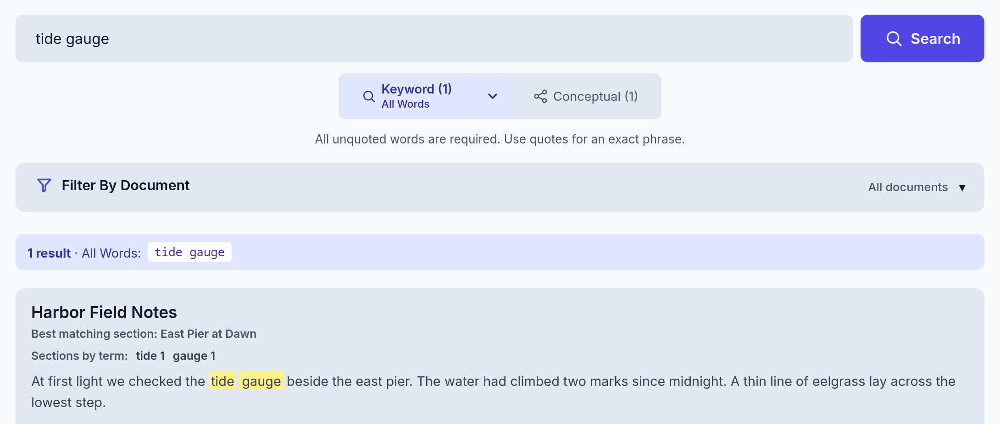
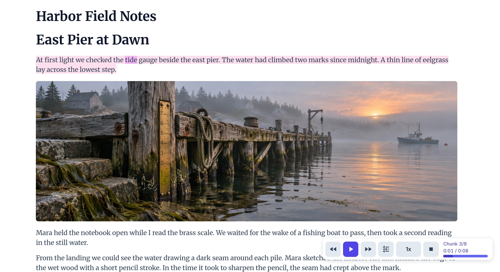
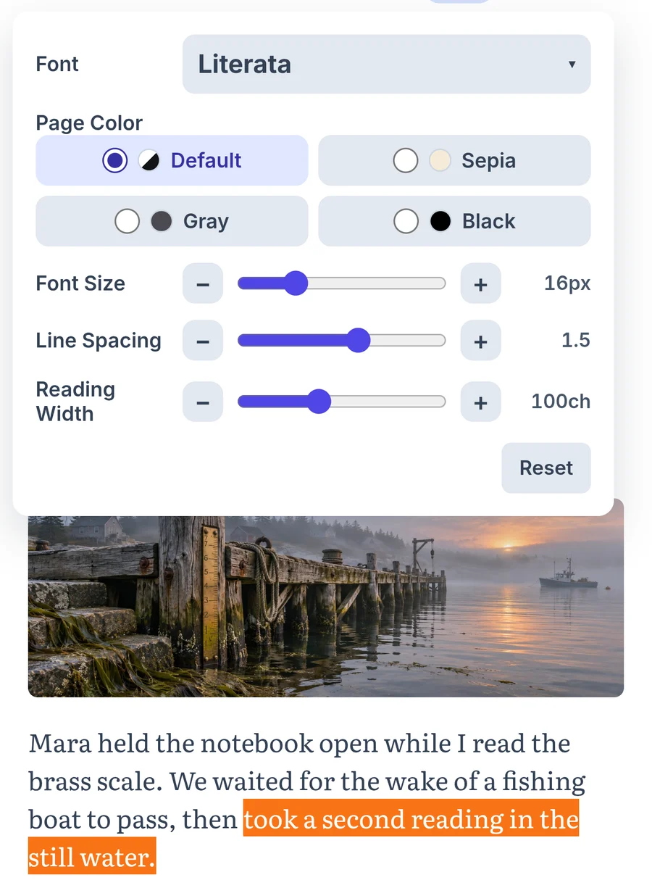
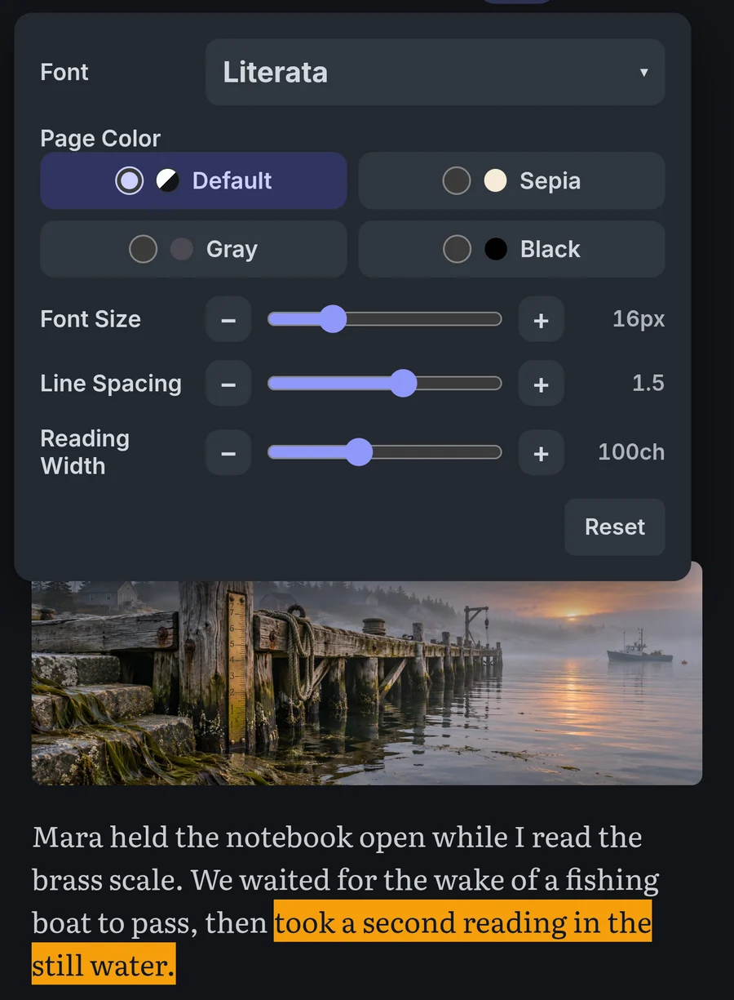

Buscar
Busque uma palavra ou frase exata no texto completo.
Se lembrar da ideia, experimente a busca semântica baseada em embeddings para encontrar trechos com significado parecido.




Busque um trecho em seus livros, artigos e anotações. Leia o contexto ou ouça o trecho no seu dispositivo.



Busque uma palavra ou frase exata no texto completo.
Se lembrar da ideia, experimente a busca semântica baseada em embeddings para encontrar trechos com significado parecido.

Abra o resultado no trecho encontrado e continue a leitura.
Marque o trecho para voltar a ele na próxima vez que abrir o documento.




Ouça o audiolivro salvo a partir desse trecho.
Acompanhe o texto destacado ou adiante a leitura enquanto a narração continua.
Leve seus documentos para leitores locais de HTML, EPUB, PDF, TXT e Markdown. Os PDFs mantêm as páginas originais, enquanto o OCR off-line pode tornar páginas digitalizadas em inglês ou árabe pesquisáveis e audíveis.
Importe vários arquivos de uma vez, navegue por capas ou listas, organize pastas, edite títulos, salve o áudio gerado e mova documentos e audiolivros selecionados entre dispositivos com Papercut.


Baixe uma voz uma vez e depois gere e reproduza audiolivros no seu dispositivo, sem assinatura nem cobrança por uso.
Salve pacotes de audiolivros para compartilhar, transferir ou importar novamente no Papercut em outro dispositivo.
Vozes e idiomas
A importação, a busca, a leitura e a geração de audiolivros acontecem no dispositivo. O reconhecimento de texto em inglês e árabe nos PDFs já vem incluído e funciona offline.
Downloads e links externos usam a internet. A transferência direta usa a rede local quando você escolhe enviar livros ou áudio a outro dispositivo.
Comece com um instalador recomendado ou abra o grupo da plataforma para ver todos os pacotes. Perguntas frequentes
Papercut_v1.10.2_android-arm64-v8a.apk
Ative Instalar apps desconhecidos nas Configurações do navegador ou gerenciador de arquivos e abra o APK.
Lançamento na App Store em breve
Papercut_1.10.2_amd64.AppImage
Papercut_1.10.2_amd64.deb
Papercut-1.10.2-1.x86_64.rpm
Requer Linux amd64 com WebKitGTK e GStreamer disponíveis. Os artefatos são compilados no Ubuntu 24.04.
Baseado em Debian (Ubuntu, Mint): sudo apt install ./Papercut_*.deb
Baseado em RPM (Fedora, openSUSE): sudo rpm -i Papercut-*.rpm
AppImage: torne executável (chmod +x) e execute diretamente. Em sistemas baseados em Arch, o AppImage pode precisar de WEBKIT_DISABLE_COMPOSITING_MODE=1; consulte o README para mais detalhes.
Papercut_1.10.2_aarch64.dmg
Papercut_1.10.2_x64.dmg
Requer macOS 10.13 ou posterior em Macs com Apple Silicon ou Intel. Abra o arquivo .dmg e arraste o Papercut para a pasta Aplicativos. As versões oficiais são assinadas com Developer ID e notarizadas. Se estiver testando um artefato de CI ou desenvolvimento local sem assinatura, clique com o botão direito (ou Control-clique) no ícone do aplicativo e escolha Abrir na primeira execução.
Escolha a versão correspondente ao seu Mac: Apple Silicon (_aarch64.dmg) para chips da série M ou Intel (_x64.dmg) para Macs com processador Intel.
Papercut_1.10.2_x64_en-US.msi
Papercut_1.10.2_x64-setup.exe
Requer Windows 10 ou superior de 64 bits e Microsoft Edge WebView2. Execute o instalador MSI ou EXE e siga as instruções.
SHA256SUMS.txt
v1.10.2.zip
v1.10.2.tar.gz
Informações práticas sobre áudio off-line, privacidade, arquivos compatíveis e instalação do Papercut em cada plataforma.
O Papercut importa arquivos HTML, EPUB, PDF, TXT e Markdown. PDFs com texto incorporado podem ser pesquisados imediatamente; páginas somente de imagem e híbridas podem ser reconhecidas sob demanda em inglês ou árabe com OCR off-line. Dispositivos Android compatíveis também podem digitalizar páginas ou importar fotos para um PDF.
Sim. O Papercut também usa OCR integrado ao dispositivo para reconhecer texto em inglês ou árabe em páginas PDF somente de imagem ou híbridas. O OCR e a geração de audiolivros não enviam seus documentos para um serviço em nuvem.
Para buscar por significado, baixe o modelo opcional, ative a busca semântica experimental e crie o índice no seu dispositivo. Depois, você poderá buscar offline.
Downloads e links externos usam a internet. A transferência direta usa a rede local quando você escolhe enviar livros ou áudio a outro dispositivo.
O Papercut está disponível em inglês, árabe, chinês simplificado, espanhol, francês, hindi, italiano e português brasileiro.
O Kokoro oferece suporte ao inglês e vozes experimentais em mandarim, espanhol, francês, hindi, italiano e português do Brasil. O Supertonic oferece vozes experimentais em inglês e árabe.
Kokoro é o modelo padrão para inglês. Após o download, ele gera voz no dispositivo, sem chave de API nem cobrança por caractere.
O Piper Kareem oferece suporte ao árabe. O Supertonic é uma alternativa experimental. O SILMA requer um ambiente de execução opcional no Linux x64.
O Papercut não reivindica a propriedade do áudio gerado. Você é responsável pelos direitos sobre o texto de origem, qualquer voz ou gravação de referência usada e a forma como o áudio exportado é compartilhado. O Papercut salva o audiolivro localmente e não o envia para um serviço.
Sim. Audiolivros salvos podem ser exportados como pacotes do Papercut e depois compartilhados, transferidos para outro dispositivo, armazenados como backup ou importados novamente. Ao compartilhar, publicar, vender ou transmitir áudio gerado, identifique-o como gerado por IA e não o use para se passar por alguém ou enganar.
Não. Os recursos de voz de referência devem ser usados somente com vozes e gravações que você tem o direito ou a permissão de usar.
Android: Android 8.0 / API 26 ou posterior em dispositivos arm64-v8a.
iOS: planejado, com lançamento na App Store em breve.
macOS: macOS 10.13 ou posterior em Macs com Apple Silicon ou Intel.
Linux: Linux amd64 com WebKitGTK e GStreamer disponíveis; os artefatos são compilados no Ubuntu 24.04.
Windows: Windows 10 ou posterior em x64 com o runtime Microsoft Edge WebView2.
Comece pelo README para obter ajuda de configuração e detalhes das plataformas. Veja as novidades nas notas da versão, consulte todas as versões ou contribua no GitHub.
Contato
Relate erros, peça ajuda, solicite um idioma ou modelo de voz ou conte o que tornaria o Papercut melhor para a sua biblioteca.
Os envios do formulário são processados pelo Netlify Forms. Não inclua documentos privados, segredos nem conteúdo confidencial da sua biblioteca.